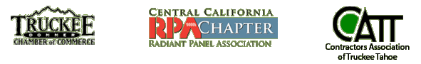

Turn to Leslie Heating & Hydronics for service and repair of your high efficiency forced air and hydronic systems. We also sell and install furnaces and radiant heat systems. Owned and operated by Don Leslie, Leslie Heating & Hydronics offers 25 years of experience serving the Truckee and North Lake Tahoe area.
We pride ourselves in staying on the cutting edge of the heating trade with expertise in new equipment and service training, as well as experience in more efficient methods to maintain your older furnaces and hydronic radiant heat systems. We supply and install the latest in phone call-up and Internet controls for your primary residence, vacation home or business locations. We also can provide a wide variety of air filtering and humidifying systems.
For new construction or remodeling projects, we'll join your construction team to ensure the heating and air filtering aspects of the project are completed on time, on budget and to your satisfaction.
Tax credits may be available for your new installation of a furnace or hydronic heating system.
We are fully licensed, bonded and insured heating contractor specializing in radiant heating and hydronic heating. We recommend you verify the credibility of anyone you are considering hiring for heating system repairs and installation. Information on contractors can be found at the California State Licensing Board. We work with heating expert Ric Grow for some heating repairs.
